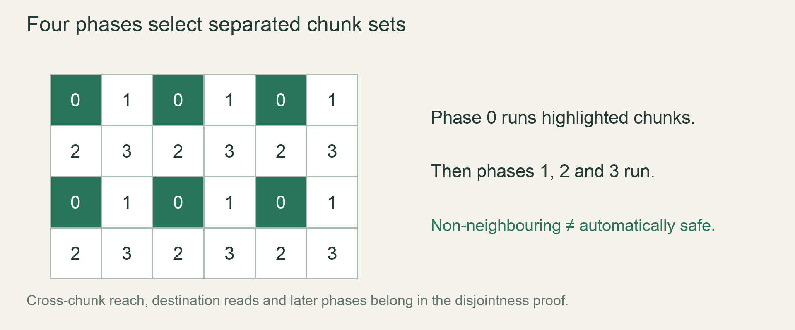

M1 / Water & heatLesson 40 of 100 · ~5 min reading + build time
Borrow disjoint slices before parallel work
The example needs no unsafe code and preserves the single owner of the buffer. The course’s cross-chunk proof remains a separate requirement.
Previously: Let steam rise and condense near its source. Keep that working result available before starting this lesson.
Why we need this now
Two helpers need to mutate different regions of the same buffer. Borrowing the whole vector twice is not the right interface, even if you know the indices differ. We need an operation that expresses the disjointness in the types. split_at_mut gives a small, concrete example before any threads are involved.
Your result: The example needs no unsafe code and preserves the single owner of the buffer. The course’s cross-chunk proof remains a separate requirement.

01Read the compiler question correctly
An exclusive mutable reference grants access to the region it describes. If two helpers each receive &mut Vec<T>, both would claim the entire vector while their calls overlap. The compiler cannot infer a hidden promise that one will touch only the left half. Shrink the interface to the memory each helper is allowed to change. A mutable slice describes a contiguous region, and splitting the original slice creates two nonoverlapping regions.
02A boundary proves disjointness
For an array of four elements, splitting at 2 yields indices [0,1] and [2,3]. There is no shared element. The right slice begins at its own local index zero, so right[0] is the original element 2. The original owner still owns the array; the temporary borrows provide controlled access. Once the borrows are no longer used, you may inspect the original array again. You did not clone the storage or create independent copies.
03Keep the split index valid
The ordinary split operation requires the boundary to be at most the slice length. Splitting at zero is valid: the left side is empty. Splitting at length is valid: the right side is empty. A boundary beyond length is an error. Validate any user-derived partition before calling the method, or use an appropriate checked interface available in the chosen toolchain. Do not turn an invalid partition into unsafe pointer arithmetic just to avoid a diagnostic.
04What this does not prove for chunks
Disjoint chunk objects do not automatically imply disjoint simulation footprints. A worker may move a grain into a neighbour, inspect a destination beyond its own object or modify shared metadata. The slices in this lab prove only the allowed writes to the slice itself. Before parallelizing chunks, identify every read and write: cell data, moved markers, dirty rectangles, heightmap changes and event queues. Use the same reasoning at that larger boundary rather than treating this example as a magic threading permission.
Read → predict → run → change
Walk through the working example
Isolated lab: save as scratch.rs, then run rustc --edition=2024 --test scratch.rs -o /tmp/rusty-lab-40 followed by /tmp/rusty-lab-40. Port the tested helper into the game only after the lab is understood.
Download this worked example ↧
fn add_one(values: &mut [i32]) {
for value in values { *value += 1; }
}
#[test]
fn split_regions_change_the_original() {
let mut values = [0, 10, 20, 30];
let (left, right) = values.split_at_mut(2);
add_one(left);
add_one(right);
assert_eq!(values, [1, 11, 21, 31]);
}
#[test]
fn edge_splits_are_valid() {
let mut values = [5, 6];
let (left, right) = values.split_at_mut(0);
assert!(left.is_empty());
right[0] = 9;
assert_eq!(values, [9, 6]);
}Read what each part does
- Start by writing down the inputs and the result you expect from the first assertion. Read the helper from top to bottom, naming every branch and state change before running the test. The small fixture is deliberate: a landscape hides errors that a few cells expose.
- Both tests pass. Changes through either slice are visible in the original owner, and an empty left partition is valid.
- This complete headless example isolates one mechanism. It does not replace your existing game file or implement an entire milestone. After the tests pass, move the relevant rule behind the world interface introduced earlier, then repeat the same fixture through that interface. Keep rendering out of this test path.
Expected result
Both tests pass. Changes through either slice are visible in the original owner, and an empty left partition is valid.Exact version numbers, paths and compiler wording may differ. Compare the behavior and file locations, not incidental output formatting.
Try the idea here
This is a bounded teaching model in your browser, not your Rust game and not a real terminal. It never executes shell commands or modifies project files.
Prediction · repair · transfer
Exercises you actually do
Write a prediction or make an attempt before opening a solution. Use the hint if stuck; then compare reasoning and verify with the stated check. A different implementation is fine when it satisfies the same contract.
Map local indices
After split_at_mut(2), which original index is right[1]?
Need a hint?
The right slice begins at original index 2.
Worked solution
It is original index 3. Add a write to right[1] and assert the fourth original value changed, not the second.
How to verify your result
Only original index 3 receives that write.
Make uneven partitions
Split five elements at 2 and increment only the right region.
Need a hint?
The helper accepts any mutable slice length.
Worked solution
Starting from [0,0,0,0,0], the result is [0,0,1,1,1]. No helper needs to know the original vector width to respect its borrowed region.
How to verify your result
The first two elements remain unchanged.
Find a hidden shared write
A helper receives a disjoint cell slice but increments one global event counter. Is the entire job disjoint?
Need a hint?
The cell buffer is only one part of the footprint.
Worked solution
No. Both jobs may still write the counter. Give each job an owned local event count, then combine them in a fixed serial phase, or use appropriate synchronization if that is the intended design.
How to verify your result
Your footprint list includes all side data, not only cells.
When it goes wrong
Start with the observed symptom. Change one assumption at a time instead of pasting fixes until the error disappears.
Borrow error after creating slices
What is happening: The original owner is used while a mutable slice is still needed later.
Try this: Finish slice use before reading the owner or reduce the borrow scope.
Right-side changes seem offset
What is happening: Local slice indices were confused with global indices.
Try this: Write the index mapping down and test a distinctive array.
split_at_mut panics
What is happening: The split index exceeds length.
Try this: Validate boundaries and test zero/length edge cases.
Explain it without the example
Why doesn’t splitting the chunk list prove neighbour-cell writes are disjoint?
Reasoning to compare
The workers may still write beyond their own chunks. The proof must cover the entire footprint of each rule, not only container ownership.
Self-check only: test a prediction or ask your tutor if anything still feels arbitrary.
Finish with evidence
The example needs no unsafe code and preserves the single owner of the buffer. The course’s cross-chunk proof remains a separate requirement.
Make one small variation without copying: predict it, run it and explain any difference. On another day, repeat one exercise from memory before starting the next lesson. Ask your tutor about any step you can execute but cannot explain.
This is an attempt marker, not a grade. Learning records are written only after demonstrated understanding.
Primary sources for this lesson
Use sources to verify the mechanism. The lesson itself supplies the instructions; the links are not a substitute for teaching them.